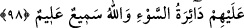
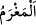

göre nasıl ki iman kalbe ait zâtî sıfatlardan ise küfür ve nifak da nefse ait zâtî
sıfatlardandır. Nefsin sıfatının kalbe sirâyet etmesi ve böylece kalbin nefsin boyası ile
boyanması sebebiyle kalbin kâfir olma ihtimali vardır.
Mesnevî’de şöyle denilir:
Hava yavaş yavaş suyu nasıl çekerse
Ahmak da sizden bir şeyler çalar, ruhen yoksul bırakır
Senin hararetini çalar, soğukluk verir
Seni soğuk taş üstüne oturmuş kişiye döndürür
Aynı şekilde, nefse kalp sıfatının sirayet etmesi ve böylece nefsin kalp boyası ile
boyanması sayesinde nefsin mümin olması da mümkündür.
Sakın öd ağacının aslı ağaçtır deme
Dumanını gör, ne müstesnâ, ne güzel!
Yani, bu koku ona gülsuyuna yakınlık sebebiyle sirâyet etmiştir. Bu meşhur bir
husustur.
Kalb, kâfir olsa bile nefis, küfür ve münâfıklıkta o kalbden daha şiddetli olur. Aynı
şekilde nefis mümin olsa bile kalb, iman bakımından o nefisten daha kuvvetli olur.
“Allah’ın Rasûlü’ne indirdiği kanunları tanımamaya daha yatkındır.” Yani nefis ve
sıfatları, kalbe göre Allah’ın ruhlara nâzil olan vâridâtını (ilhamlarını) tanımamaya
daha müsaittir. Çünkü ruh, sûret âlemindeki Rasûl mesabesindedir.
“Allah çok iyi bilendir,” bazı kâfir nefisleri mümin, bazı mümin kalpleri de kâfir
yapmada “hikmet sahibidir.”
98. Bedevîlerden öylesi vardır ki Allah yolunda harcadığını angarya sayar ve sizin
başınıza belâlar gelmesini bekler. (Bekledikleri) o kötü belâ kendi başlarına
gelmiştir. Allah pek iyi işiten, çok iyi bilendir.
Bazı fertlerinin sıfatı ile sıfatlanan “bedevîlerden öylesi vardır ki” Allah yolunda
“harcadığını” sûreta sadaka olarak verdiği malı “angarya” zarar “sayar”
“
(angarya, zarar)”: Bir insanın malına, suçsuz yere ârız olan zarar demektir.
Allah’a ve âhiret gününe inanmayan, malını Allah yolunda harcadığında kendisine
sevap kazandıracağına, Allah yolunda harcamadığında ise ceza ile karşılaşacağına
inanmayan kimse, elbette infak ettiği şeyi zarar ve boşu boşuna mal zâyiâtı sayar. Böyle